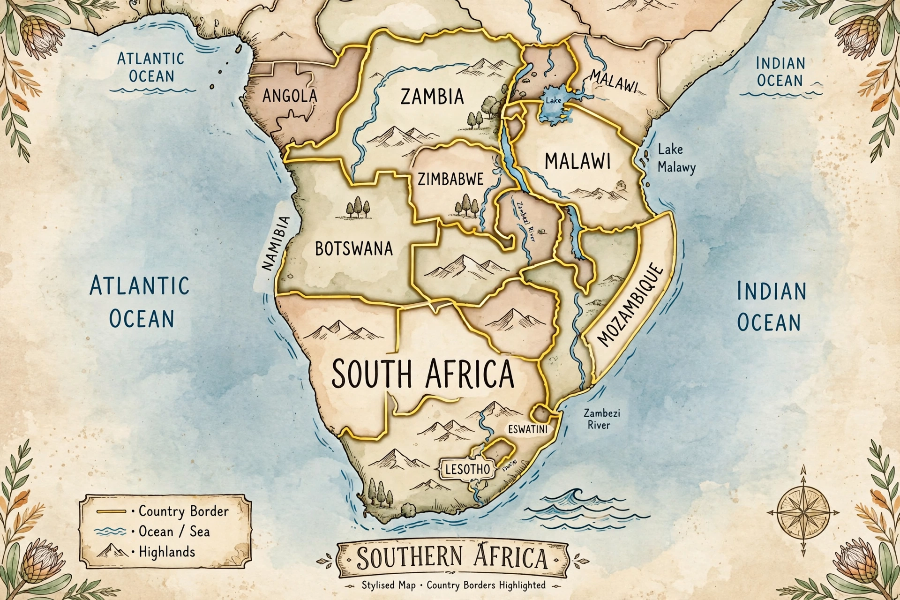

Southern Africa
From Wikipedia, the free encyclopedia
| Southern Africa | |
 | |
| UN geoscheme countries | Botswana, Eswatini, Lesotho, Namibia, South Africa |
|---|---|
| Broader region | Also commonly Angola, Malawi, Mozambique, Zambia, Zimbabwe, Madagascar and island states |
| Largest city | Johannesburg, South Africa |
| Regional body | Southern African Development Community (SADC) |
Southern Africa is the southernmost region of the African continent. Under the United Nations geoscheme it comprises five countries — Botswana, Eswatini, Lesotho, Namibia and South Africa — but common usage, and the membership of the Southern African Development Community (SADC), extend it to Angola, Malawi, Mozambique, Zambia, Zimbabwe, Madagascar and the Indian Ocean island nations.
Geography
The region is dominated by the Kalahari and Namib deserts, the savannas of the interior plateau (the Highveld and Bushveld), and the Drakensberg escarpment in the east. Major rivers include the Zambezi — with Victoria Falls — the Limpopo and the Orange. The Cape Floristic Region of South Africa is a global biodiversity hotspot, and the region hosts celebrated wildlife areas such as the Okavango Delta and Kruger National Park.
History and economy
Southern Africa was home to San hunter-gatherers, Bantu-speaking farming kingdoms such as Great Zimbabwe and Mapungubwe, and, from the seventeenth century, Dutch and British colonial settlement at the Cape. The mineral revolution — diamonds at Kimberley (1867) and gold on the Witwatersrand (1886) — industrialized the region around migrant labour, a system entrenched by apartheid South Africa until majority rule in 1994. Mining (gold, platinum, diamonds, uranium), agriculture and tourism remain economic pillars, with South Africa the region's largest economy and its cities, including Mbabane, Johannesburg and Cape Town, its hubs.
See also: Mbabane, Mswati III